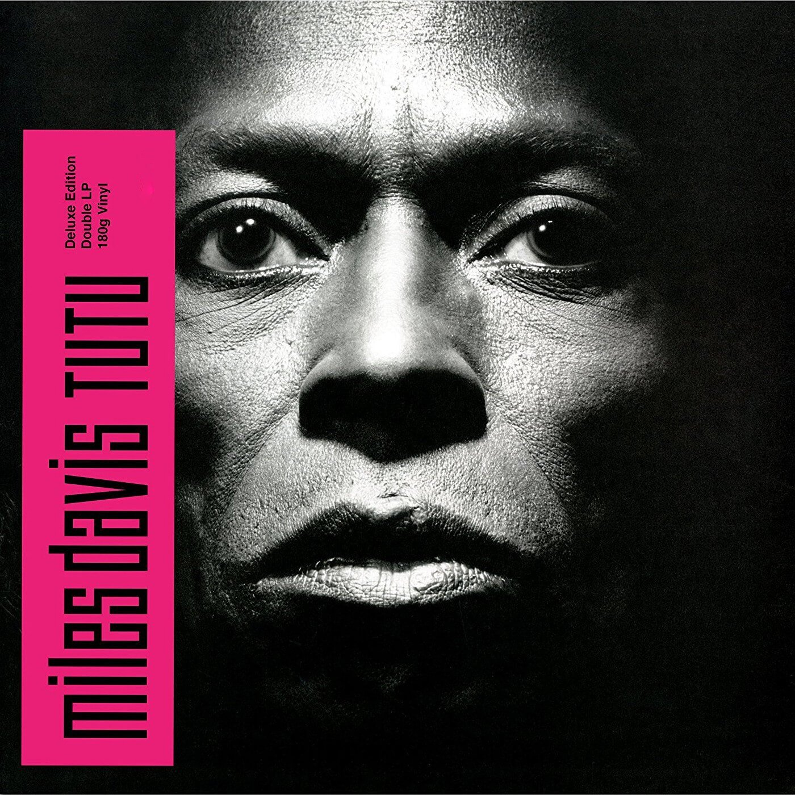
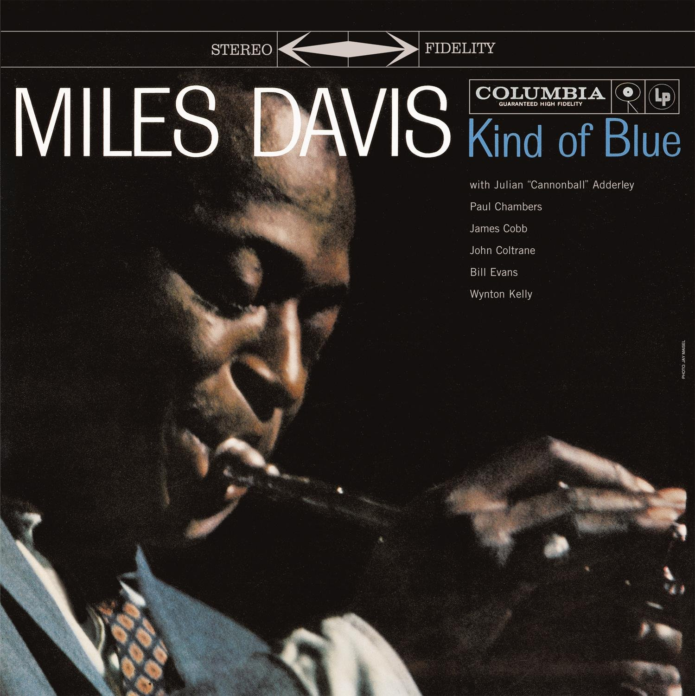

“Man, sometimes it takes you a long time
to sound like yourself.”
Grammy Award winner Miles Davis was a major force in the jazz world, as both a trumpet player and a bandleader. It would not be a stretch to say that jazz would not look the way it does today without his contributions. His list of influences reached to many musicians and genres beyond jazz; funk, pop, Jimi Hendrix, Sly and the Family Stone, and so on.


When he began his career, Davis was playing for several bands, such as Charlie Parker's quintet and later the big band of Benny Carter. He would continue to work with the likes Parker, Charles Mingus, Dizzy Gillespie, and so on.
Davis was addicted to heroin in the 50s and in 1951, he signed a year-long contract with Prestige and released, The New Sounds, Dig, Conception, and later Blue Haze, Bag's Groove, Walkin', and Miles Davis and the Jazz Giants was a style shift away from Bebop into Hard Bop.
After the Round Midnight performance at the New Port Jazz Festival with Coltrane, Miles was signed with Columbia where he released Round About Midnight,
Milestones, which showed an interest in modal jazz, and then Miles' new sextet
released jazz track.

In collaboration with Gil Evans, Miles Davis would release critically albums, Miles Ahead, Sketches of Spain, Porgy and Bess, Quiet Nights, and what many consider to be his best album, A Kind of Blue.
In the mid to late 60s, Miles Davis released Miles Smiles, Sorcerer, Nefertiti, Miles in the Sky, and Filles de Kilimanjaro. The latter two albums would signify a beginning of a shift to electric instruments that would later be found in albums, In a Silent Way, the critically acclaimed Bitches Brew, and On the Corner.
1972, Miles Davis would suffer a car crash that would lead him to take painkillers and cocaine to cope with the pain and later alcohol.

Between 1875 and 1980, Miles Davis took a hiatus due to his rapid cocaine use and rampant alcoholism. He underwent hip-surgery in December 1975 and in 1978 went to jail for not paying child-support. In 1979, Davis rekindled his relation with actress Cicely Tyson who helped overcome his cocaine addiction and his love for music. They married in 1981, but were officially divorced in 1989.


Released on 1981 was The Man with the Horn, a collaboration between Gil Evans, Marcus Miller, and himself. It was received poorly, but his live album, We Want Miles, received critical acclaim and a Grammy. Davis would continue to release albums, Star People, Aura, and You're Under Arrest, which featured pop songs such as Michael Jackson's Human Nature.


Miles Davis would go on to work with other artists such as Toto and Prince and feature in films such as Scrooged with Bill Murray.
He released the critically acclaimed album, Tutu, in 1986.
1988, he was inducted into the Order of Malta, 1989 he received a Grande Medaille de Vermeil from Paris mayor Jacques Chirac, received a Grammy Lifetime Achievement Award in 1990, and awarded knighthood, the Chevalier of the Legion of Honor by French Culture Minister Jack Lang in 1991.

September 1991, Davis checked into St. John's Hospital where he had an intracerebral hemorrhage followed by a coma. On September 28 1991, his life support was pulled. His death was attributed to the combined effects of a stroke, pneumonia, and respiratory failure. He was buried in Woodlawn Cemetery in the Bronx, New York City with one of his trumpets.